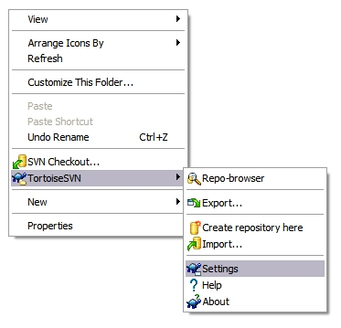

In order to benefit yourself, and all of the other developers within
the Turmeric project, it is strongly advised that you configure
your own subversion client with at least some basic [auto-props].
To configure your TortoiseSVN config file, open up the "Settings" menu choice in the standard right click menu on your windows explorer folders.
Next, use the button "Edit" for the "Subversino configuration file" to open up your notepad editor to the configuration file that TortoiseSVN uses.
Ensure you have enable-auto-props = yes set in your
configuration file.
In linux this configuration is easy.
$HOME/.subversion/config fileenable-auto-props = yes set[auto-props] entries from the example above